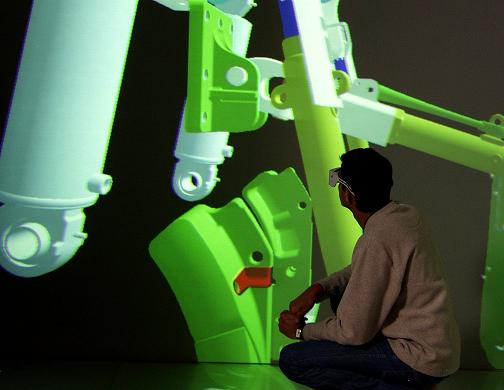

Combining Physical
Constraints
with Geometric Constraint-based Modeling for Virtual Assembly

Overview
This research project aims to create a virtual assembly environment capable of simulating the constant and subtle interaction (hand-part, part-part) that occurs during manual assembly, and providing appropriate feedback to the user in real-time. A virtual assembly system called SHARP “System for Haptic Assembly and Realistic Prototyping” is created, which utilizes simulated physical constraints for part placement during assembly.
The first approach taken in this research attempt utilized Voxmap Point Shell (VPS) software from The Boeing Company for implementing collision detection and physics-based modeling in SHARP. A volumetric approach, where complex CAD models were represented by numerous small cubic-voxel elements was used to obtain fast physics update rates (500 – 1000 Hz). A novel dual-handed haptic interface was developed and integrated into the system allowing the user to simultaneously manipulate parts with both hands. However, coarse model approximations used for collision detection and physics-based modeling only allowed assembly when minimum clearance was limited to ~ 8-10%.
To provide a solution to the low clearance assembly problem, the second effort focused on importing accurate parametric CAD data (B-Rep) models into SHARP. These accurate B-Rep representations are used for collision detection as well as for simulating physical contacts more accurately. A new hybrid approach is presented, which combines the simulated physical constraints with geometric constraints which can be defined at runtime. Different case studies are used to identify the suitable combination of methods (collision detection, physical constraints, geometric constraints) capable of best simulating intricate interactions and environment behavior during manual assembly. An innovative automatic constraint recognition algorithm is created and integrated into SHARP. The feature-based approach utilized for the algorithm design, facilitates faster identification of potential geometric constraints that need to be defined. This approach results in optimized system performance while providing a more natural user experience for assembly.
Media
Publications
·
Seth, A., Vance, J. M. and Oliver, J. H., Combining Geometric Constraint
with Physics Modeling for Virtual Assembly Using SHARP, 2007 ASME
International Design Engineering Technical Conference Proceedings.
September 4-7,
·
Seth, A., Su, H. J. and Vance, J. M., SHARP: System for Haptic
Assembly & Realistic Prototyping. 2006 ASME International Design
Engineering Technical Conference Proceedings. September 10-13,
·
Seth, A., Su, H. J. and Vance, J. M. A Desktop Network Haptic
VR Interface for Mechanical Assembly. ASME International Mechanical
Engineering Congress and Exposition Proceedings. November 5-11, 2005,
·
Seth, A., Combining Physical Constraints with Geometric
Constraint-based Modeling for Virtual Assembly, Ph.D. Dissertation,
Personnel
Funding
Facilities
Mechanical Engineering | VRAC | ISU | Home | E-mail | Previous
{kind=link}
{kind=link}
{kind=link}